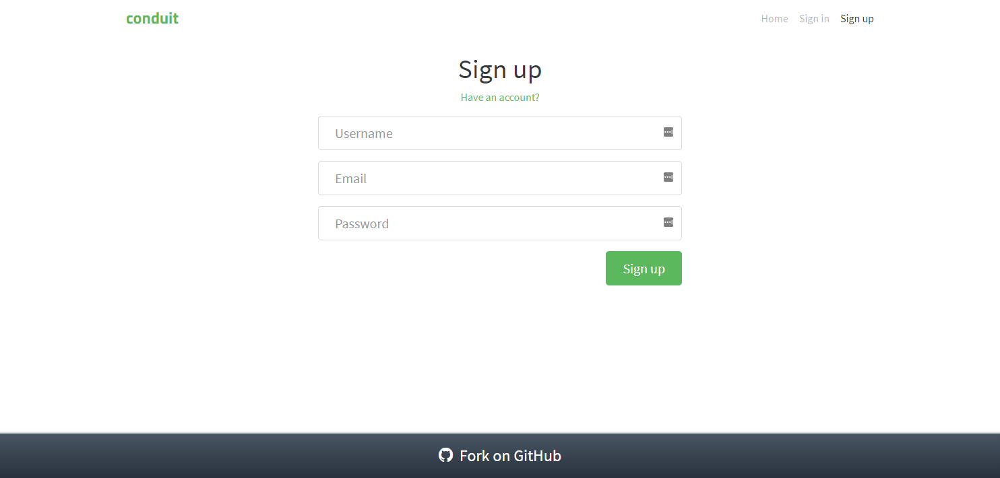

Sign-up route
In this section, we will modelize and implement the user flows related to the sign-up route. There are two main entries to that route:
- a user may directly load the route in the browser
- a user may be redirected to that route —- for instance if the user is not authenticated and likes/unlikes an article from the global feed
In the sign-up route, the user may register with a username, an email, and a password. The following rules apply:
- authenticated users navigating to the sign-up page should be redirected to the home route
- authenticated users cannot sign up while being logged in. Any attempt to do so will trigger a redirection to the home route
- sign-up form fields must be validated for the sign-up to go through (validation is handled partly by the browser (email field) and partly server-side, the client does no validation).
UI
We already have identified the screens in the Specifications section. Ler’s remind them here:
| Route | State | Main screen |
|---|---|---|
#/register |
Authentication required by the app or requested by the user |  |
#/register |
Sign up clicked | |
#/register |
Sign up failed |  |
The UI for the sign-up route will be implemented with a SignUp Svelte component which will take two parameters:
| Prop | Description |
|---|---|
inProgress |
boolean which indicates that the sign-up API is pending returning a response. This will be used to give visual feedback to the user about the in-flight request |
errors |
errors object returned by the sign-up API in case of sign up request failure |
There is no mystery to that component, it depending as usual exclusively on its props. It may be worth mentioning that we use the FormData browser API to get the value of the form inputs. Some implementations are listening on form input changes and maintaining a copy of the form input values. This is however not necessary and we prefer using the standard browser API, and using the DOM as the single source of truth.
The full source code for the SignUp component can be accessed in the repository.
UI testing
As before, we test the UI with Storybook. The corresponding stories are available in the source repository.
Events
We have the following events for the sign-up route:
| Event | Event data | Occurs when |
|---|---|---|
CLICKED_SIGNUP |
form data ({username, email, password}) |
user submits the sign-up form |
FAILED_SIGN_UP |
errors (as returned from sign-up API) | user submitted the sign-up form but the request failed |
SUCCEEDED_SIGN_UP |
signed up user (as returned from sign-up API) | user submitted the sign-up form and the request succeeded |
Additionally, the user may click on links (like have an account). However, this is not handled directly by the machine. Instead, this is handled by the browser as any other links, triggering a change of URL, which then triggers a ROUTE_CHANGED event to the machine.
Commands
We have the following commands for the sign-up route:
| Command | Command parameters | Description |
|---|---|---|
REDIRECT |
hash to redirect to | redirects the user to a new/same hash location |
SIGN_UP |
sign-up form data ({username, email, password}) |
sends an API request to sign the user up |
Commands implementation
To implement the redirect command (without having a reload of the page), we have to update directly the browser location. We do so with pushState in order to have the browser history updated without the onhashchange event being triggered. The latter is important as we listen on onhashchange to send a ROUTE_CHANGED to the machine, and we do not want that event to be triggered for a redirection. Just like for the previous route, the function realizing the redirection is passed to the corresponding command handler as effect handler:
[REDIRECT]: (dispatch, params, effectHandlers) => {
const hash = params;
const { redirect } = effectHandlers;
redirect(hash);
},To implement the sign-up command, we defer to the API and update the session repository with the new user data. The logic, as before is enclosed into functions passed as effect handlers (saveUser, and register):
[SIGN_UP]: (dispatch, params, effectHandlers) => {
const { email, username, password } = params;
const { register, saveUser } = effectHandlers;
register({ email, password, username })
.then(res => {
const { user } = res;
saveUser(user);
dispatch({ [SUCCEEDED_SIGN_UP]: user });
})
.catch(({ errors }) => {
dispatch({ [FAILED_SIGN_UP]: errors });
});
}Refactoring
Writing the tests for the user scenarios, we came to realize the need to refactor our implementation to accommodate the new route, and the future routes in a way that will minimize maintainability and testing issues.
What are those issues which did not appear before?
On the one hand, we now have a lot of props for our RealWorld component. Some of these props are only relevant for one specific route. Testing the RealWorld component with all these props will quickly become cumbersome, so we create one component for each route. We will arrange our rendering code to be able to test each route component separately. This concretely means having the RealWorld pick the component to display as a function of the route, and pass the appropriate selection of the RealWorld props to the corresponding route component.
Svelte allows us to implement this logic relatively straightforwardly with dynamic components. The scr/App.svelte thus goes like this:
<script>
...
<Fsm
{fsmFactory}
{env}
{eventBus}
{commandHandlers}
{effectHandlers}
{initEvent}>
{#if _shouldRender}
<RealWorld
dispatch={next}
{route}
{tags}
{articles}
{page}
{activeFeed}
{user}
{selectedTag}
{favoriteStatus}
+ {inProgress}
+ {errors} />
{/if}
</Fsm>Then the src/UI/RealWorld.svelte component, which uses a dynamic component resolved at runtime, becomes:
<script>
import Banner from "./Banner.svelte";
import Header from "./Header.svelte";
import Home from "./Home.svelte";
import SignUp from "./SignUp.svelte";
import { routes } from "../constants";
// Props
// Common props
export let dispatch;
export let user;
export let route;
// Home route props
export let tags;
export let articles;
export let page;
export let activeFeed;
export let selectedTag;
export let favoriteStatus;
// Sign up props
export let inProgress;
export let errors;
const { home, signUp } = routes;
// Component which will be displayed depending on the route
const componentRoutes= {
[home]: Home,
[signUp]: SignUp,
};
// Props for the component which will be displayed
$: componentRoutesProps={
[home]: {user, tags, articles, page, activeFeed, selectedTag, favoriteStatus},
[signUp]: {inProgress, errors},
};
$: component = componentRoutes[route]
$: componentProps = componentRoutesProps[route]
</script>
<div>
<Header {user} />
<svelte:component this="{component}" {...componentProps} {dispatch} />
</div>The second maintainability issue we are confronted with is that our state machine becomes quite large to be conveniently contained in a single file. As a result, we create a behavior directory and we put there the parts of the state machine concerned exclusively with a specific route in separate files, and aggregate those parts into the state machine (src/behaviour/fsm.js):
import { ACTION_IDENTITY, createStateMachine } from "kingly";
import { events, routes } from "../constants";
import { allRoutesViewLens, initialAllRoutesState, updateURL } from "./common";
import { homeStates, homeTransitions, initialHomeRouteState } from "./home";
import {
initialSignUpRouteState,
signUpStates,
signUpTransitions
} from "./signUp";
import { cleanHash } from "../shared/helpers";
/** @type Array<HOME_ROUTE_EVENTS> */
const [
ROUTE_CHANGED,
TAGS_FETCHED_OK,
TAGS_FETCHED_NOK,
ARTICLES_FETCHED_OK,
ARTICLES_FETCHED_NOK,
AUTH_CHECKED,
CLICKED_TAG,
CLICKED_PAGE,
CLICKED_USER_FEED,
CLICKED_GLOBAL_FEED,
TOGGLED_FAVORITE,
FAVORITE_OK,
FAVORITE_NOK,
UNFAVORITE_OK,
UNFAVORITE_NOK
] = events;
const { home, allRoutes, signUp } = routes;
const INIT = "start";
const initialControlState = INIT;
const initialExtendedState = {
[home]: initialHomeRouteState,
[allRoutes]: initialAllRoutesState,
[signUp]: initialSignUpRouteState
};
const states = {
[INIT]: "",
routing: "",
home: homeStates,
signUp: signUpStates
};
/** @type {Array<Transition>} */
const transitions = [
{ from: INIT, event: ROUTE_CHANGED, to: "routing", action: updateURL },
{
from: "routing",
event: void 0,
guards: [
{ predicate: isHomeRoute, to: "home", action: ACTION_IDENTITY },
{ predicate: isSignUpRoute, to: "signUp", action: ACTION_IDENTITY }
]
},
homeTransitions,
signUpTransitions
].flat();
/**
* @typedef {Object} Update
*
* This function updates a state object, spliced per a property called `route`
* The route update basically works like this: {a, b: {c, d}}, [{b:{e}]} -> {a, b:{e}}
* All Object.assign caveats apply
* https://developer.mozilla.org/en-US/docs/Web/JavaScript/Reference/Global_Objects/Object/assign
* @param {Object} extendedState
* @param {Array.<[route, Array<Update>]>} extendedStateUpdates
* @returns {Object}
*/
function updateState(extendedState, extendedStateUpdates) {
const extendedStateCopy = Object.assign({}, extendedState);
if (extendedStateUpdates.length === 0) return extendedStateCopy;
return extendedStateUpdates.reduce((acc, extendedStateUpdate) => {
const [route, updates] = extendedStateUpdate;
if (route === void 0 || updates === void 0) {
console.warn(
`updateState: incorrect extended state update argument! [route, updates] with either route or updates undefined!`,
extendedStateUpdate
);
return extendedState;
}
const routeState = Object.assign({}, acc[route]);
acc[route] = updates.reduce(
(acc, update) => Object.assign(routeState, update),
routeState
);
return acc;
}, extendedStateCopy);
}
// Guards
export function isHomeRoute(extendedState, eventData, settings) {
const { url } = allRoutesViewLens(extendedState);
return url === home;
}
export function isSignUpRoute(extendedState, eventData, settings) {
const { url } = allRoutesViewLens(extendedState);
return url === cleanHash(signUp);
}
// Action factories
// Machine definition
export const fsmDef = {
initialControlState,
initialExtendedState,
states,
events,
transitions,
updateState
};
export const fsmFactory = settings => createStateMachine(fsmDef, settings);As can be seen in the previous code, we also decided to compartimentalize the machine’s extended state per route:
const states = {
[INIT]: "",
routing: "",
home: homeStates,
signUp: signUpStates
};
const initialExtendedState = {
[home]: initialHomeRouteState,
[allRoutes]: initialAllRoutesState,
[signUp]: initialSignUpRouteState
};This in turn means that we have to change the extended state updates performed by the action factories so they now address the new location of the extended state to modify. To do this in a maintainable way, we take inspiration from functional lenses. We do not use exactly that due to the shape of our updateState function, but we do create view and update helpers functions for each of our routes which will update the relevant parts of the extended state. We correspondingly update our updateState to reflect these changes. For instance:
export function routeViewLens(route) {
return function(extendedState) {
return extendedState[route];
};
}
export function homeUpdates(updates) {
return [[routes.home, updates]];
}
export function allRoutesUpdate(updates) {
return [[routes.allRoutes, updates]];
}The updateState function is now:
function updateState(extendedState, extendedStateUpdates) {
const extendedStateCopy = Object.assign({}, extendedState);
if (extendedStateUpdates.length === 0) return extendedStateCopy;
return extendedStateUpdates.reduce((acc, extendedStateUpdate) => {
const [route, updates] = extendedStateUpdate;
if (route === void 0 || updates === void 0) {
console.warn(
`updateState: incorrect extended state update argument! [route, updates] with either route or updates undefined!`,
extendedStateUpdate
);
return extendedState;
}
const routeState = Object.assign({}, acc[route]);
acc[route] = updates.reduce(
(acc, update) => Object.assign(routeState, update),
routeState
);
return acc;
}, extendedStateCopy);
}In short, all our modifications are oriented towards adding new routes without modifying the previous routes and common parts.
We are now ready for writing tests for our user scenarios.
User scenarios test
We test four key user scenarios, the content of which should be clear from their identifiers in the code:
const userStories = [
[
UNAUTH_USER_ON_SIGNUP_SEES_FORM,
UNAUTH_USER_ON_SIGNUP_SEES_FORM_INPUTS,
UNAUTH_USER_ON_SIGNUP_SEES_FORM_COMMANDS
],
[
AUTH_USER_ON_SIGNUP_IS_REDIRECTED,
AUTH_USER_ON_SIGNUP_IS_REDIRECTED_INPUTS,
AUTH_USER_ON_SIGNUP_IS_REDIRECTED_COMMANDS
],
[
UNAUTH_USER_ON_SIGNUP_SEES_FORM_SIGNS_UP_AND_SEES_HOME_FEED,
UNAUTH_USER_ON_SIGNUP_SEES_FORM_SIGNS_UP_AND_SEES_HOME_FEED_INPUTS,
UNAUTH_USER_ON_SIGNUP_SEES_FORM_SIGNS_UP_AND_SEES_HOME_FEED_COMMANDS
],
[
UNAUTH_USER_ON_SIGNUP_SEES_FORM_FAILS_SIGN_UP_AND_SEES_FORM_WITH_ERRORS,
UNAUTH_USER_ON_SIGNUP_SEES_FORM_FAILS_SIGN_UP_AND_SEES_FORM_WITH_ERRORS_INPUTS,
UNAUTH_USER_ON_SIGNUP_SEES_FORM_FAILS_SIGN_UP_AND_SEES_FORM_WITH_ERRORS_COMMANDS
]
];Behaviour modelization
The behavior to modelize is relatively simple with the small complication that we must make sure that the user is not authenticated before signing up a potentially new user. We maintain the current modelization for the home route while adding the sign-up behavior to the existing machine. The final modelization is as follows:

Note how we check twice that our user is authenticated before either displaying the sign-up form, or executing the sign-up API request. Note also, how the nested structure of our state machine allows us to focus on the part that we are interested in visualizing, while folding the part we are not interested in.
Behaviour implementation
The implementation (src/behaviour/signUp.js) derives directly from the modelization. We reproduce here the main part which are the transitions:
export const signUpTransitions = [
{
from: "signUp",
event: INIT_EVENT,
to: "fetching-authentication-form-entry",
action: resetSignUpRouteStateAndFetchAuth
},
{
from: "fetching-authentication-form-entry",
event: AUTH_CHECKED,
guards: [
{
predicate: isNotAuthenticated,
to: "form-entry-sign-up",
action: renderSignUpForm
},
{ predicate: isAuthenticated, to: "routing", action: redirectToHome }
]
},
{
from: "form-entry-sign-up",
event: CLICKED_SIGNUP,
to: "fetching-authentication-sign-up",
action: fetchAuthenticationAndRenderInProgress
},
{
from: "fetching-authentication-sign-up",
event: AUTH_CHECKED,
guards: [
{ predicate: isNotAuthenticated, to: "signing-up", action: signUserUp },
{ predicate: isAuthenticated, to: "routing", action: redirectToHome }
]
},
{
from: "signing-up",
event: FAILED_SIGN_UP,
to: "fetching-authentication-form-entry",
action: renderFormWithErrorsAndFetchAuth
},
{
from: "signing-up",
event: SUCCEEDED_SIGN_UP,
to: "routing",
action: redirectToHome
}
];The transitions are very simply the edges of the previously represented graph.
What we learned
Changing the shape of the extended state of the machine potentially requires reviewing all the state updates made by the action factories. As the machine grows, this can be cumbersome. A simple way to mitigate the impact of refactoring the extended state is to divide it into groups with high cohesion and low coupling. That means that the pieces of state within a group should be accessed or modified by action factories from a selected set of control states. This ensures that refactoring those pieces of state will only affect that selected set of control states. On the other hand, pieces of state in different groups should rarely be accessed or modified together by action factories.
In our implementation of the Conduit application, we thus grouped pieces of state by route, and associated each route with a dedicated compound control state. When we will refactor a route due to changes in requirements, we will know the parts that will be impacted by the new requirements, and the parts that will not.
Then, by separating the behavior specification from the implementation, and by modelizing the behavior as a state machine that we can visually represent as a graph, we can immediately deduce properties of our modelization. In this case, the modelization graph directly shows that a user will not be able to sign up if he is already authenticated: no transition implements this behavior in the graph. Such assurance is hard to derive in a simple manner in implementations that are not based on state machines. In a fictional alternative implementation that relies on components, developers may have to delve into the code for each component and manually trace the user flows across the component tree. This illustrates, on an admittedly small scale, why state machines are so often used in safety-critical software where safety guarantees are paramount.
As a matter of fact, the hyperapp implementation of the Conduit demo app does not implement those safety requirements. This could be simply an oversight (there are after all no written specifications for the Conduit app), or this could result from a view-first approach that favors such behavioral oversight.
In any case, it is by specifying our behavior with state machines that we realized, before reaching the implementation phase the necessity to add an authentication check before signing up the user, while there were no specifications telling us to do so. This is another crucial advantage of state machine modelization. They make it easier to review a modelized behavior vs. the expected behavior, and find design bugs before they get buried deep into the code.
Summary
We implemented the sign-up route for our application. We followed the implementation strategy we previously detailed. In the process of doing so, we came to refactor our application, keeping our architecture, but structuring the application per route to minimize the amount of code we have to modify to add future routes. We have around 10 routes to implement so it was important to do so early. We were also able with our modelization to ensure at the design level that our requirements will be indeed implemented by our implementation. For instance, our design ensures that a user clicking twice on the sign-up button will not lead to attempting to sign in twice.